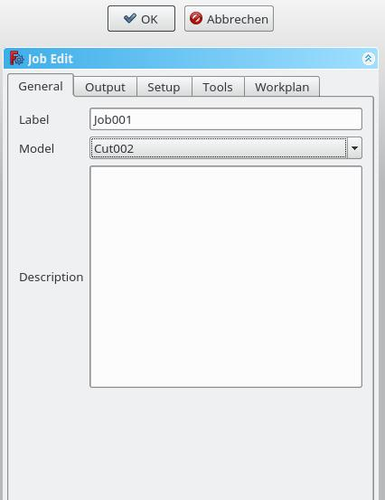
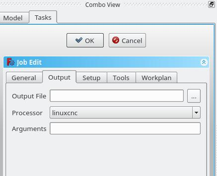
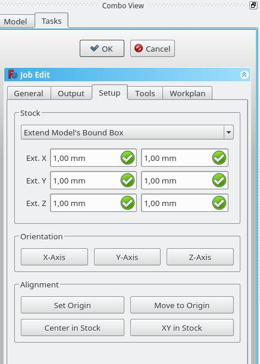
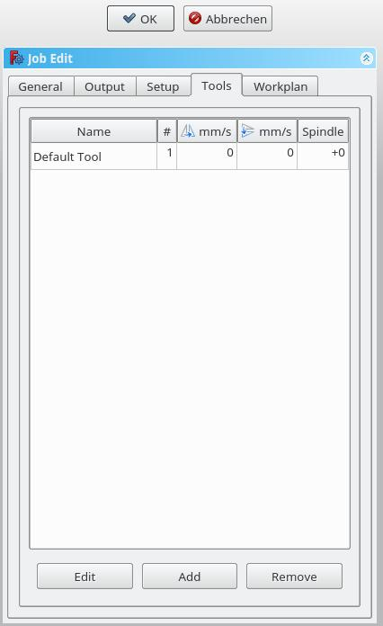
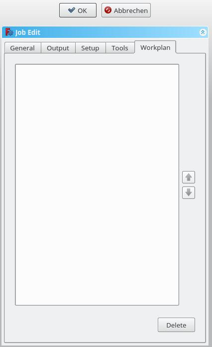

Travail Path
|
| Emplacement du menu
|
| Path → Job
|
| Ateliers
|
| Path
|
| Raccourci par défaut
|
| P,F
|
| Voir aussi
|
|
|
|
Description
L'outil Travail (Tâche) crée un nouvel objet Travail dans le document actif. L'objet Travail contient les informations suivantes:
- Une liste de définitions des paramètres des outils, spécifiant la géométrie, les paramètres de coupe et les vitesses pour les outils des Opérations de Path.
- Une liste séquentielle du flux de travail des Opérations de Path.
- Un Corps de base: un clone utilisé pour le décalage.
- Un Brut représentant la matière première qui sera usinée dans l'atelier Path.
- Une feuille de calcul, contenant les entrées utilisées par les opérations de Path, y compris les valeurs statiques et les formules.
- Les Paramètres de configuration spécifiant le chemin de destination, le nom de fichier et l'extension du fichier G-Code, ainsi que le post-processeur utilisé pour générer le langage approprié pour le contrôleur CNC cible et personnaliser les unités, les changements d'outil, le stationnement, etc.
Usage
- Appuyez sur le bouton Travail
L'interface graphique de Travail comporte cinq onglets alignés horizontalement, Général, Sortie, Configuration, Outils et Plan de travail. Vous pouvez confirmer ou annuler la boîte de dialogue.
Généralités

- Label: L'étiquette du Travail affiché dans l'arborescence.
- Model: Objet de Base qui définit par sa forme les parcours d'usinage. S'il s'agit d'un objet Part Design, c'est généralement le corps que vous sélectionnez ici. Si vous avez sélectionné un élément dans l'arborescence avant, cliquez sur l'icône "Ajouter un Travail". Cet élément est déjà entré ici. Vous pouvez le modifier en sélectionnant un élément différent dans le menu déroulant.
- Description: Vous pouvez ajouter quelques notes au travail ici. Les notes sont seulement pour votre information et n'ont aucun effet sur le parcours d'usinage.
Sortie

- Fichier de sortie: Définissez le nom, l'extension et le chemin du fichier de sortie G-Code.
- Processeur: Sélectionnez le post-processeur pour votre machine.
- Arguments: Ajoute des arguments pour le post-processeur si nécessaire.
- Processor: Select the postprocesser for your machine.
- Arguments: Add arguments for the postprocessor as needed.
Conditions initiales

- Brut: définir la taille et la forme de la matière première.
- Orientation: sans effet pour l'instant
- Alignement: sans effet pour l'instant
Outils

Ajoutez le(s) outil(s) de votre Magasin d'outils dont vous avez besoin pour les opérations de ce travail.
Après avoir ajouté un outil, vous pouvez définir / modifier l'avance et la vitesse de broche si vous avez besoin d'une vitesse d'avance différente dans cette tâche.
Une modification ici ne modifie pas les paramètres stockés dans le magasin d'outils.
L'outil par défaut que vous pouvez supprimer si vous avez ajouté un outil personnel.
Plan de travail

Si vous avez une tâche qui implique plus d'une opération d'usinage, vous pouvez déterminer dans quel ordre les opérations doivent être effectuées.
Pour réorganiser, sélectionnez une opération et appuyez sur le bouton haut ou bas.
{kind=link}
{kind=link}
{kind=link}
{kind=link}
{kind=link}
{kind=link}
{kind=link}